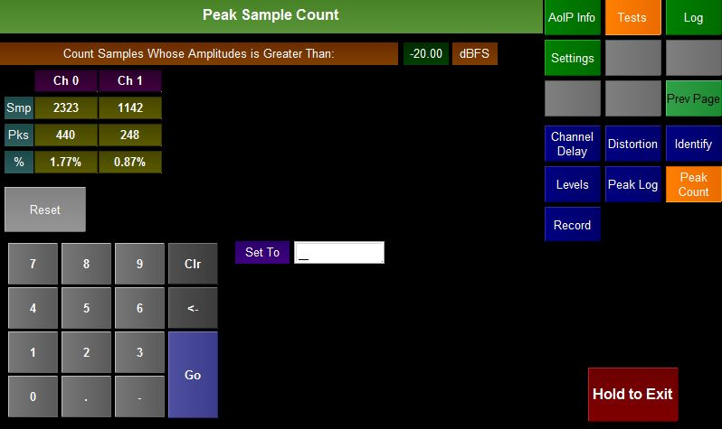

The Peak Count test plugin counts the number of samples and peaks above a preset amplitude (in dBFS).
The count is done on a channel by channel basis and all incoming channels are monitored.
The top of the screen shows the current threshold.
For each channel
Pressing the Reset button will reset the statistics for all channels.
The user can change the threshold using the numberpad and pressing Go (Note the user may need to touch the white box next to Set To first). All entries are considered to be negative so entering -20 is the same as entering 20.